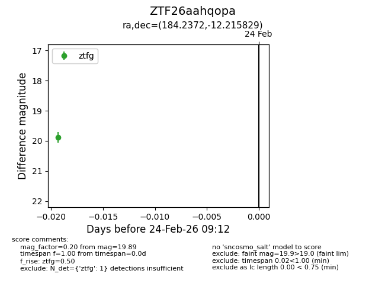
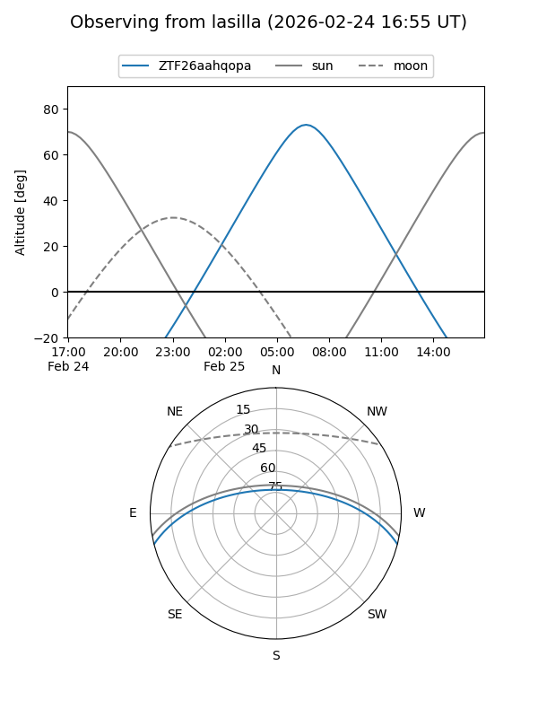
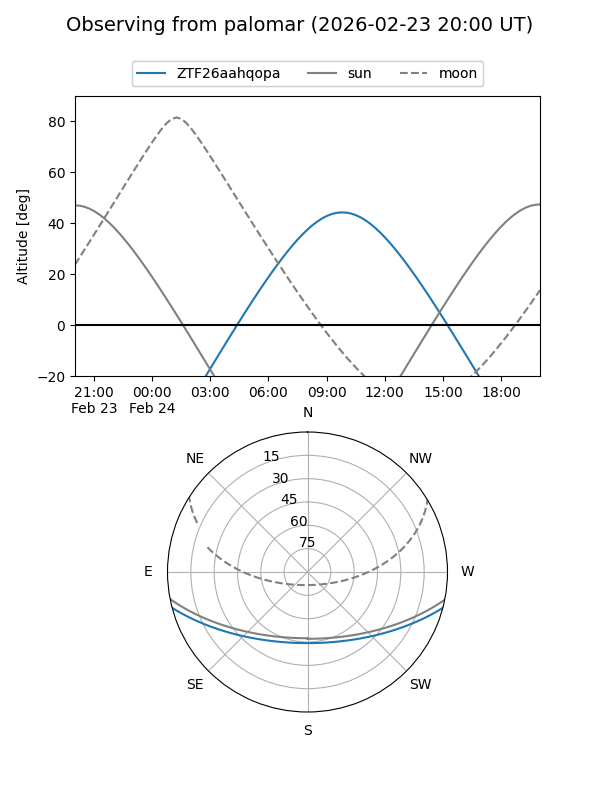

ZTF26aahqopa
Target ZTF26aahqopa at 2026-02-24 09:13
Aliases and brokers:
FINK: link
Lasair: link
ALeRCE: link
alt names
ZTF26aahqopa (ztf,fink_ztf)
Coordinates:
equatorial (ra, dec) = 184.2372,-12.21583
equatorial (HMS+DMS) = 12:16:56.92,-12:12:56.98
galactic (l, b) = (289.8175,+49.77567)
Flags:
Photometry:
last ztfg=19.89
1 ztfg detections
Lightcurve

Visibility


Additional plots